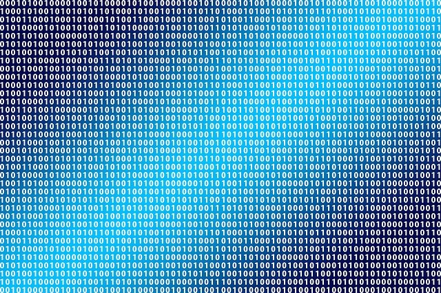
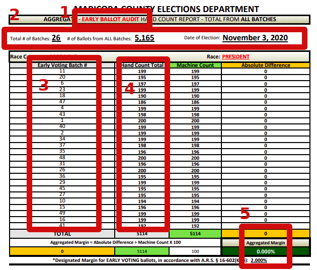
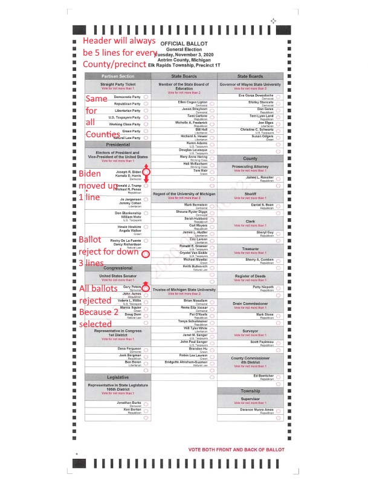

Democrats screamed widespread fraud in 2016 and Republican's in 2020. All Americans lost faith in the integrity of their elections for a very simple and valid reason. Dominion Voting Systems are not designed to build faith in the integrity of the election.
Sorry for this rant but I'm angry because most American's don't have any common sense. It doesn't matter what party nor for whom they voted. Every American should be embarrassed because it's proof that you can't fix stupid. Every American bears responsibility for causing the Capitol riots.
Most accusations (even wild) are based on some truths. "no evidence" must never happen again. Below, I go through some of the accusations and how Dominion's equipment neglects to collect evidence to disprove / deny those accusations.
For example, consider the accusation that voting machines were being accessed from Germany thru the internet. Why doesn't Dominion software collect the evidence showing the network is not connected to the internet? Better yet, why doesn't Dominion software disable the internet connection during the election? Dominion clearly demonstrates you can't fix stupid because the only solution they could find was forcing clerks to disconnect the network cable. Dominion needs to be decertified until they fix their voting systems.
Even wild accusations are based in some truth. Consider the accusation that Dominion has connections to Hugo Chavez and possibly voter fraud in Venezuela. Dominion bought Sequoia Voting Systems which had been under a federal investigation for ties to Hugo Chavez and Venezuela. company that was being investigated federal acquired a company that In 2010, Dominion a From 2005 to 2008, Smartmatic bought an established US company called Sequoia voting systems which Dominion acquired in 2010. Realize that In 2006, a fedtherea federal investion there was enough concern about Smartmatic owning Sequoia Voting systems that they started an investigation which is discussed in an article published in 2006the NY Times published an article about a US federal investigation into Sequoia Voting Systems being used in US elections while owned by Smartmatic voting systems because of the probable ties to Hugo Chavez, Venezuela and voter fraud. Smartmatic was formed by 3 Venezuelans which do not have election expertise nor large scale manufacturing expertise. In August 2003, Venezuela held an emergency referendum to award Smartmedia (3 Venezuelans) a $128M contract for 1,000's of voting machines that would be used in the August 2004 emergency election. It's unbelievable that in less than 1 year, they mastered US bureaucracy, designed, manufactured and tested 1,000's of voting machines. They hired 100's who were temporary. They received intellectual export licenses. They trained employee's. They shipped equipment. By being in the USA, Smartmatic wasn't breaking US laws and Venezuela couldn't charge them for Venezuelan laws. It's very likely that Smartmatic helped Hugo Chavez stay in power. I doubt that Smar connections in 2006 because of , Dominion purchased Sequoia Voting systems. From 2006 to 2008, Smartmatic owned . S
When you see the points below, your common sense is enough to understand how Dominion negligence has failed America and why their equipment needs to be decertified until they fix all the problems.
As you'll see below, the accusations were only possible because Dominion Voting systems and Smartmatic voting systems are unreliable. The accusations were possible
Dominion and Smartmatic never claimed "no evidence". Nor did they debunk any accusations. Dominion has the voting expertise and they supply the equipment that ensures election integrity. Why do Americans spend more than $600,000,000 per election for equipment and services that do not provide any assurance of election integrity? Dominion's silence was deafening. Their negligence caused Americans to lose their faith in seriously flawed elections.
Certification is required for all equipment that poses a major risk to people. Imagine what happens when not properly certifying airplanes, cars, construction and many other industries. People get injured and die.
5 people died in Washington DC because people felt there was election fraud. Ask yourself if Dominion Voting Systems was properly certified.
Voting is considered so important that multiple U.S. agencies (e.g. CISA.GOV, EAC.GOV, ...) must certify voting machines. If your interested, read the EAC certification process.
You'll see below a pattern of continuous negligence with Dominion voting equipment and Dominion voting experts. Computer programmers from any other industry would never make these egregious mistakes. What is more concerning is that Dominion equipment passed certification with such egregious mistakes. For instance, how did the only agency responsible for computer security and integrity (cisa.gov) miss such obvious and egregious mistakes during their part of the certification?
Below are just a few of the basic design errors with Dominion equipment that place doubt in the integrity of the election. The are design errors that are easily recognized by anyone who has any common sense. This Dominion voting systems needs to be decertified and only be certified after that fix their design errors.
Every contract with Dominion specifies that Dominion is providing "voting experts" before, during and after the election. In fact, the contract specifies how many voting experts will be on-site during the election. These people are not repair technicians because failing equipment will be replaced by county staff with backup equipment.
The contract for Santa Clara county CA is available online which is probably standard for the voting industry. Sadly, the duties of Dominion voting experts are not specified in the contract. Common sense would say they are their to use their expertise to ensure election integrity.
Is their job more than standing around eating donuts? For instance, common sense would lead you to believe that Dominion audit reports should also be reviewed by Dominion voting experts that are on-site. Clearly they did not review the audit in Maricopa county AZ as discussed below.
I would like to point out that Dominion receives an insane amount of money for their shoddy equipment and shoddy services. Undeniable government waste. A quick look at Dominion's contract with Santa Clara county CA shows they pay over $3,400,000 per election ($1,700,000 per year). Maricopa county AZ with more than twice the voters should be paying over $7,000,000 per election. That is a lot of money for equipment used less than 3 weeks every 2 years. Shouldn't tax payers expect Dominion to provide real value for that kind of money?
Boeing made a similar claim of "no evidence" with their Boeing 737 Max 8 jet which they agreed to a pay $2.5 billion. Dominion is very aware of the errors designed into their equipment or they are not voting expertise. If you doubt these are not easily resolved by the computer, then ask any programmer how they would implement election protections. Most have standard computer solutions that most programmers easily recognize.
How did Dominion equipment pass certification when it doesn't comply with FOIA requirements? Dominion makes it impossible for states to immediately and easily to comply with their states FOIA requests for the non-confidential election information. Dominion has the voting expertise to know what information must remain confidential. Only Dominion can change the software to be FOIA compliant and make this information easily available.
FOIA exists because secrets cause distrust. For every claim of voting fraud, FOIA requires the response to be "If you don't trust me then look at the information for yourself". As we saw in the 2016 and 2020 elections, the official response has been a constant "believe me because ther is no evidence".
Dominion Logs, audits and ballots could easily be made public thru the internet. Realize that Dominion equipment photographs every ballot and that by law, ballots must never contain any confidential information. To be transparent, FOIA by mosts states require this information be publicly available. Democracy died in darkness.
Elections are over in a short amount of time but a FOIA request take time to be processed.Accusations need to be disproven quickly to stop them from becoming wild accusations.
Also realize that Dominion is not committed to FOIA in any way otherwise they would be telling the public how their equipment is FOIA compliant and how states can make this information available to the public.
The computer industry's dirty little secret is that computer's only perform tasks that can be performed by people. For instance, computer programmers wowed you by saying voter signatures are verified using AI (Artificial Intelligence). Ask any computer programmer what function AI provides and the simple answer is statistical analysis. What made that computer programmer that a statistician is better than a handwriting analyst in comparing signatures?
If you think this is an isolated case, then think about Google. Google is not a computer company. It's a company that uses computers as an inexpensive way to provide value to their customers. Google search: job description would be librarian. Google voice: telephone service. Google drive: records wharehousing. Google autonomous vehicles: job description is taxi driver. The list is goes on and everything comes down to a human equivalent.
People are often unnecessarily complicated. The computer programmers created the excessive complication. You should stop being manipulated by computer people. Never allow them to talk over your head, overwhelm or intimidate you. There is nothing a computer does that a person couldn't perform. Remind them to explain it to you as a lay person. You don't care about the computer details. You want to talk about the task as if it were performed by a person.
Use some common sense when dealing with computer people. Computer expertise does not magically give them expertise in every other field (e.g. voting). If these computer experts were knowledgable in voting, how did they overlook all the obvious problems listed here when they participated in the Dominion certification?
Common sense goes out the window when computer people are involved. Very few people realize that the agency responsible for election integrity (EAC.GOV) did not say anything about the election. It was the agency responsible for computer security (CISA.GOV) declared the 2020 election was one of the most reliable elections ever. It was these computer experts without any voting expertise that stopped rumors by publishing https://www.cisa.gov/rumorcontrol.
There is no such thing as computer error. It's always Computer programmer error. The computer followed the computer programmer's instructions exactly. The moral of the story is you are putting your trust in computer programmers and that computers have nothing to do with your trust. It's a real person that failed to meet your expectations.
For election integrity, poll watchers are the single most important safeguard. Dominion equipment does not ensure clerks follow proper procedures. It is poll watchers that identify clerks doing something incorrectly (e.g. feeding the same ballots multiple times).
Dominion equipment fails to register poll watcher complaints. If Dominion used their common sense, they would realize that a clerk will stop their bad behaviour if a poll watcher registered a complaint in front of the clerk directly on their voting equipment.
Common sense tells you clerks will make the same mistakes year after year unless they are told what they are doing wrong. Dominion's equipment fails to identify clerks that are making mistakes and not following procedures correctly. Why do we even bother with poll watchers when they are being ignored. For this very reason, Dominion equipment needs to be decertified until poll watcher duties are integrated into Dominion equipment.
I personally disagree with this accussation but Dominion cannot debunk this accussation when their equipment has so many egregious errors. We can only say for sure that Dominion voting experts allowed egregious errors in their equipment that should never have passed certification.
Dominion audit reports are not organized for an autitor's ease of use (e.g. audit summary should be first). They don't contain poll watcher complaints, poll watcher agreement to vital voting events. poll watcher verification of adjucation, ballots with ballot events such as adjucation changes and much more. If Dominion used their voting expertise in designing their equipment, then they could easily debunk this accusations.
Dominion equipment needs to decertified until they can prove their equipment is reliable and trustworthy.
Dominion fails to follow any best practices. Dominion equipment does not ask poll watchers about their concerns. Their equipment does not take a photo before and after showing the changes. The equipment could easily stop ballot modifications by asking poll watchers to verify banned materials such as pens have been removed from the clerk's work station. Dominion equipment needs to be decertified until they change their machines to debunk this accussation.
Every wild accusation occurred because rules were not being enforced. Dominion equipment failed to enforce those rules. Dominion voting experts failed to enforce voting rules or even notify election officials about rules being ignored.
Every rule ignored calls the validity of the election into question. Computers are great at enforcing rules because they always follow their instructions exactly as provided by the computer programmer. Understanding rule enforcement is common knowledge for all computer programmers. E.g. Can you trust a self driving car that doesn't follow the rules?
As election experts, Dominion Voting Systems knows all election rules. As owners of the election software, it is their obligation to enforce election rules in their purview. Enforcing rules is not specific to the voting industry. There are simple solutions to many of these yet Dominion fails to take basic precautions to insure the integrity of the election.
Dominion computers failed to force Maricopa election officials to thoroughly review their audit report. You don't need any special skills to recognize obvious irregularities.
Unlike most states, Arizona publishes the Dominion audit report. For instance, the Maricopa county AZ 2020 audit report is available to the public through the internet. Decide for yourself if the following concerning.

From the Maricopa county 2020 election summary above, we see that 1,915,847 early voting ballots were received. As mentioned above, audits are a small look at something. Arizona's goal is around 2% of the ballots. Maricopa county should be auditing around 38,000 early vote ballots.
Clearly election officials and on-site Dominion voting experts ignored that 5,165 early vote ballots is almost 1/8 of the expected 38,000 ballots to be audited (0.27% instead of 2%).
The total for "absolute difference" is 0 which is great at first glance. 0 means that the hand count agrees completely with the machine count. Out of curiosity, let's see if 2016 Maricopa county audit were all 0.

2016 had problems with 28 ballots but were perfect in 2020. A quick look at other races, we notice that every race was 0 in 2020 but 2016 had several races reporting differences. Why did mail-in voters have problems in 2016 but in 2020 were perfect.
Why aren't the on site Dominion voting experts going through this report with the election officials. Are they really expert when they can't spot obvious irregularities?
Greenlee County Arizona had a 593% voter turnout until someone noticed the problem on the election website. They were caught and needed an excuse you would believe. Which explanations from ABC 15 "data guru" Garret Archer convinced you this was not a problem?
Why are Dominion voting experts on site when they won't immediately address voting irregularities? They know their equipment and how their equipment addresses voting irregularities.
Connected network cables is not a problem when handled correctly. We should be horrified that Dominion did not immediately show American's the evidence that networking is disabled or restricted for their voting systems during the election. You only need to understand that it's simple to disable or limit networking and that we can easily show you the network is not talking.
If this is an exposure for Dominion voting machines, why didn't the Dominion voting experts warn the election officials? Why didn't these experts deny this accusation.
Dominion never denied that ballots can be scanned multiple times because it is in fact possible. Dominion could easily be avoid this exposure by using equipment stamp unique id's on ballots as they are received. This would not affect voter confidentiality.
Did the Dominion voting experts warn election officials that poll watchers are required to watch out for clerks that run ballots multiple times.
Dominion computers never verify the watcher id's to ensure watchers are present. Worse yet, those computers never ask why the watchers were not present and report that fact to election officials. This is common use in many other industries. For instance, you probably have an electronic badge from your company. They allow you to enter their buildings or secure area's. They record the time and place.
It's disturbing that the voting experts at Dominion are keenly aware that poll watchers are essential for many reasons but their systems do absolutely nothing to ensure the participation of the poll watchers. Poll watchers are vital because they ensure nothing occurs in secrecy. You'll never see just one person operating a polling station. Multiple polling stations workers transport the locked ballot box to the tabulation center. A clerk and multiple observers open the locked box and they all observe the tabulation. They all verify the results. The ballots are then placed back into the box and locked. Nothing is a secret unless you fail to follow the rules. Nothing can be manipulated unless there is a conspiracy.
As voting experts providing the equipment, Dominion knows the duties required of the poll watcher (e.g. verify tabulation results). Dominion computers do not verify that poll watchers agree or disagree. Worse yet, having one poll watcher for multiple stations means they will be distracted and probably forget some of their duties.
It was horrifying that Dominion ignored their contractual obligation by not appearing in court. It was horrifying when Dominion ignored their contractual obligations to speak about various voting irregularities. It was horrifying that Dominion allowed a clerk to be blamed for failures in their equipment.
Antrim county Michigan reported a clerk error that resulted in 6,000 Trump votes moved to Biden. The reported problem was that the clerk did not install the correct ballot definition into Dominion's computers.
It's horrifying that Dominion computers actually counted these ballots. Every other industry uses form and revision numbers. For instance, consider tax form 1040. You easily know which is from 2020 and 2021. Libraries use ISBN. Microsoft word allows you to insert a headrer or footer that can have a form and revision number. Dominion is paid to review ballot design. How do they forget a simple standard in use throughout the world.
Just as bad is how they fixed the problem. The problem was only caught because someone noticed an irregularity. I personally like to see something more than "it's fixed". Democracy dies in darkness and several days after later they say it was a different problem that occurred in the computer but they still didn't explain the problem. Where's the evidence the problem was fixed correctly. Wheres the evidence that is didn't occur any where else?
Dominion computers fail to track ballot boxes because they found uncounted ballot. This is extremely disturbing because it shows that Dominion doesn't have any common sense. When ballot boxes enter the building they should be recorded. When counting is complete, compare the number of boxes received to the number of boxes tabulated. If they are different then you have boxes. Better yet would be to record every box number received and every box number counted. You then know exactly which boxes are missing or which boxes were counted twice.
I suspect finding these ballots was a deceptive move. This is common practice by magicians where they show you something in their right hand so you ignore their left hand.
It's horrifying that Dominion never discussed the ramifications of the change to mail-in voting has on their voting system integrity. As voting experts, Dominion knows that the integrity of their voting systems becomes extremely compromised when every voter can use mail-in voting.
Dominion computers were designed specifically for election day voting. For mail-in voting, their integrity relies on the rule that limits it's use to a few people who absolutely needed it. 10% mail-in fraud was acceptable because it's less than 1% of the total vote. Without this limit, 10% mail-in fraud is 10% total fraud.
Worse yet is how simple fraud became when everyone can use mail-in voting. I'm not saying there is fraud but the opportunity exists. There are solutions to limit some of these opportunities but limiting mail-in voting is by far the best solution.
Consider how simple it is to commit american voting fraud from anywhere in the world:
Does anyone actually thinks this is difficult? If we have mail-in voting, then we need rules that ensure election integrity. For instance a digital signature similar to Emails. How about post office stamping time and location. Maybe ballot drop boxes that stamp the ballots.
Computer people are unnecessarily confusing for good reason. It's how we get away with murder and force you to accept our answers as the gospel. Often we aren't trying to be dishonest but we are taking the path to avoid hassles. In the following video, the real FBI agent Frank Abignale tells you about his real life experience in the simplicty of manipulating people.
Many of the problems with Dominion are very obvious without the need for an audit. I'm not a voting expert but I've worked in several industries that require absolute trust. Decide for yourself if Dominion Voting Systems can be trusted when I can easily find so many attrocious flaws in their voting systems.
Arizona is performing an audit of Dominion equipment. Why perform an audit when Dominion equipment can't even pass a basic review. How does Dominion pass an EAC.GOV review. with so many fundemental flaws? How can CISA.GOV give Dominion their approval when there are so many obvious computer software flaws. Instead of wasting time and money, Arizona needs to force Dominion to hire talented people who create reliable and honest software. Get the federal government to do their job before they endorse shoddy work. If Dominion ever fixes all the basic problems with their equipment, then it's time for an audit.
Before the election, CISA published has responsibilities with regards to elections. TIt's amazing that CISA has responsibilities
The Department of Homeland Security is working with Dominion Voting Systems to undermine our elections. For instance, DHS Cybersecurity and infrastructure agency issued a joint statement with Dominion Voting systems that says "There is no evidence that any voting system deleted or lost votes, changed votes, or was in any way compromised." (see https://www.dominionvoting.com/). Worse yet, DHS created hundreds of web pages at https://www.cisa.gov/rumorcontrol.
Claim: A clerk forgot to change the voting form definition in the computer. The computer did not notice the difference.
Dominion failure: Use your common sense about how you tell the difference in forms that change. Every year you fill out tax form 1040 and the year clearly identifies the version of this form. Many government forms have "rev ##". Book ISBN ends with "-##". Microsoft word allows you to automatically place the "last change date" or an incremented change number onto the document. Every computer help has an "about" that software developer's recognize as a change has occurred.
Dominion should have: require a form number with change date on each page. In addition, the equipment must reject ballots that don't match the expected form number and change date.
Antrim county Michigan reports clerk error resulted in 6,000 Trump votes moved to Biden. Since it's only 6,000 votes, who cares? I care because this is an obvious lie. The only reason to lie is to cover up something far worse than the lie. Are they covering up wide spread fraud?
To make this easy to recognize the lie, let's look at a ballot from Antrim county Michigan. Let's forget about the confusing computer stuff and look at this as if the computer is expecting an old ballot but received this new ballot. Realize that
Greenlee County Arizona had a 593% voter turnout until someone caught it on their website. They were caught and needed an excuse you would believe. Which explanations from ABC 15 "data guru" Garret Archer convinced you this was not a problem?